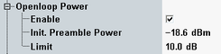

Open Loop Power Limits
The UE calculates the output power for the first transmitted preamble from system information received via the BCCH and from the received signal power level of the CPICH.
According to 3GPP TS 34.121, section 5.4.1 Open Loop Power Control in the Uplink, the tolerance for the power of the first preamble is as follows:
- ±10 dB under normal conditions and
- ±13 dB under extreme conditions.
You can define the expected power of the first (initial) preamble and a symmetrical tolerance value in the configuration dialog.
When the combined signal path scenario is active, the initial preamble power parameter is controlled by the signaling application.

Open loop power limit